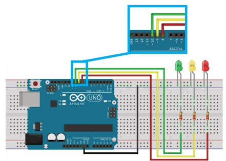
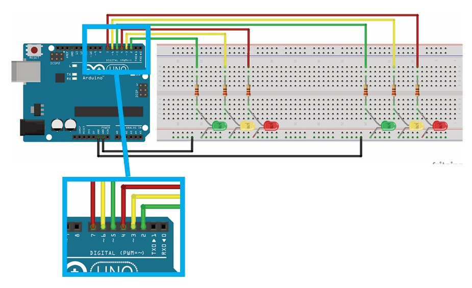

Meus projetos

Semáforo de carros
O semáforo de carros é um dispositivo de sinalização essencial para organizar o trânsito e garantir a segurança de motoristas e pedestres.

Semáforo(Cruzameneto Carros)
O semáforo em cruzamentos de carros controla o fluxo de veículos, evitando acidentes e garantindo uma circulação mais segura e ordenada no trânsito.

Push Button
O **push button** é um botão de pressão utilizado para acionar temporariamente um circuito elétrico, muito comum em sistemas de controle, como os usados para pedestres em semáforos.